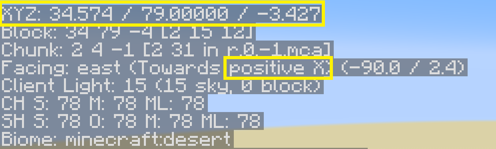

座標と方角の見方
F3 を押して表示される情報のうち、座標と方角の2箇所が重要です。

▲ F3キーで表示された座標と方角の例（XYZとpositive X）
座標（XYZ: ● / ● / ●）
- 現在位置の座標を表示します。
- 通常は X（横）と Z（縦）を見て移動します。
- Y は高さを示します。
方角（3行下の Toward ● ●）
- 向いている方角を表示します。
- 例：
positive X（ポジティブX） → Xが増える方向（東）negative X（ネガティブX） → Xが減る方向（西）positive Z（ポジティブZ） → Zが増える方向（南）negative Z（ネガティブZ） → Zが減る方向（北）
- ただし、斜め方向（北東・南東など）もまとめて「ポジティブX（東）」などと表示されます。
- ブロックにまっすぐ向くと「真東（純粋なポジティブX）」のように正確な方向が分かります。
その他の情報
- pisitive X などの後にあるカッコ内の数字、1つめは方角を－180から＋180の数字で示しています。
- 北(-180)、東(-90)、南(0)、西(90)。
- 0/90/180を目安にすれば各方角の正面を向きますが、ブロックの向きを見て合わせるほうが早いです。
- pisitive X などの次の行（Client Light）は明るさを0～15で示しています。7以下は敵が湧きます。
- カッコ内は内訳で、空からの明るさと光源ブロックからの明るさです。
- 上記画像の一番下の文字はバイオームを示しています。